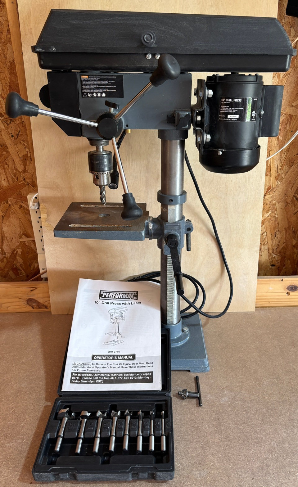

Drill Press
<-- back to index

Have had for a bit over a year. Includes:
Set of eight forstner bits, in sizes from 1/4" up to 1-3/8".
1/2" milling bit (currently in the chuck).
More info:
drill press
forstner bits
milling bit